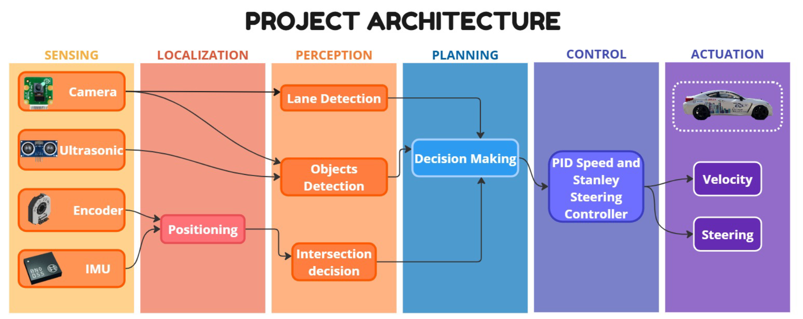

Autonomous Driving Vehicle
Introduction
Welcome to the documentation of my Autonomous Driving Vehicle project developed for the Bosch Future Mobility Challenge (BFMC).
This project is a 1:10 scale autonomous car platform designed to perform real-world driving tasks such as traffic signs perception, lane keeping, obstacle avoidance, intersection handling, and autonomous parking.

Objectives
- Compete in the BFMC competition.
- Develop a robust autonomous driving stack combining perception, planning, and control based on Sensors (Camera, Distance Sensor) and Actuators (BLDC Motor and Servo).
- Integrate embedded hardware (STM32F401RE Nucleo, Jetson Xavier NX) with ROS.
- Demonstrate safe and reliable driving behavior in a constrained track environment.
- The vehicle should be able to perform the challenges:
- Lane keeping
- Follow the traffic rules detected from traffic signs
- Obstacle avoidance (Pedestrians and Other Vehicles on road)
- Intersection handling
- Autonomous parking
- Complete the planned path by localization and navigation
Hardware
System Architecture

The system is divided into the following modules:- Perception
- Lane detection (camera-based, OpenCV/ML).
- Obstacle detection (ultrasonic sensors, LiDAR).
-
Sign & traffic light recognition.
-
Planning
- Behavior planner (FSM-based).
- Global/local path generation.
-
Obstacle avoidance & lane switching.
-
Control
- Low-level motor + steering control (PID & Stanley/MPC).
-
Safety overrides & emergency stop.
-
Hardware
- Car chassis: 1:10 RC model with differential steering.
- SBC: Raspberry Pi 5 + Jetson Xavier NX (vision & ML tasks).
- MCU: STM32F4 for motor control + sensor integration.
- Sensors: Camera, ultrasonic, IMU, wheel encoders.